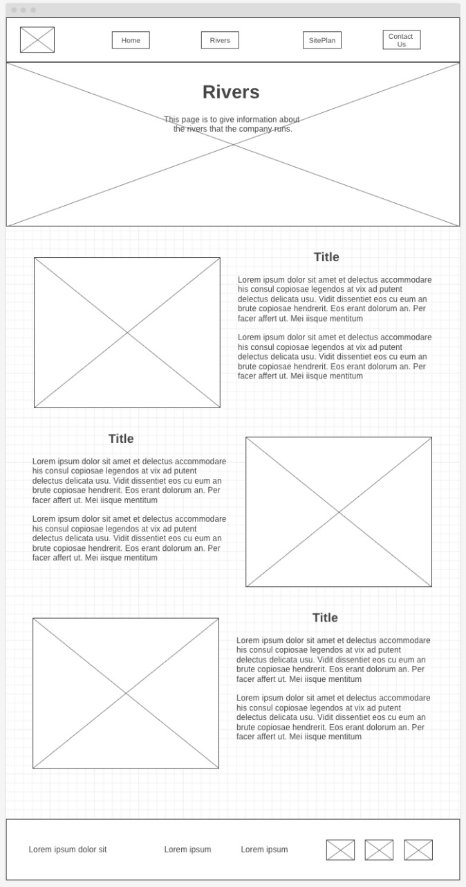
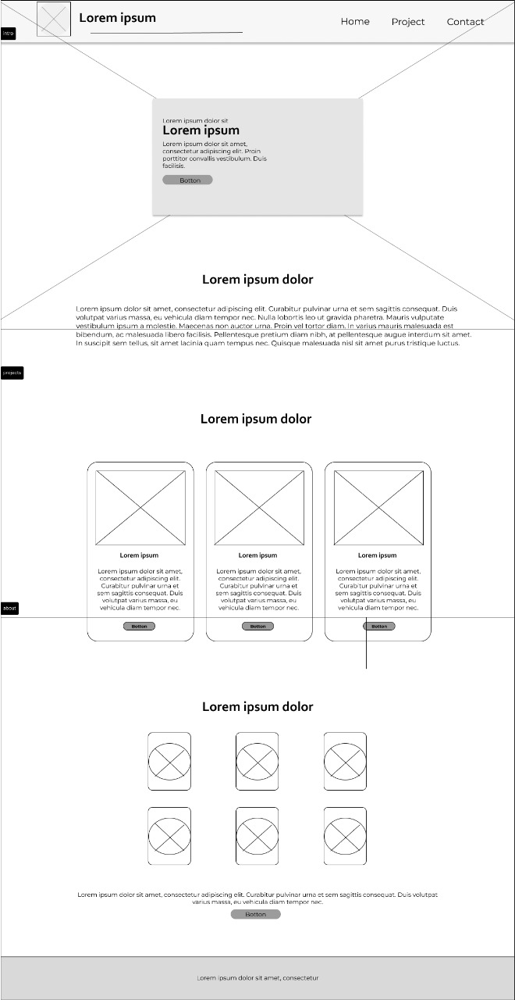

Introduction
What is a Image Search Engine using HTML CSS AND JAVASCRIPT?.
Overview:
1. Image searching is mostly based on text information associated with images.which can be extracted from containing web pages.
2. Saves time and resources.
3. There are also some content-based image retrieval systems that index images
using their visual characteristics.
4. Easy performance checks and balances.
5. Up-to-date progress evaluation.
6. Time consuming.
explanation
Specifically I chose that for me to add my skills in searching for information from internet using API,expanding my skills in working with arrays, retrival of information from data.
I will explain in a video how i did it.
Wireframes

